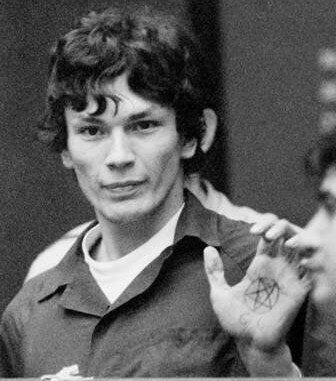
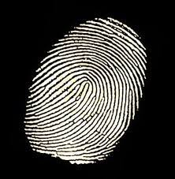
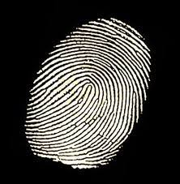

Crimes
Armas
Recordes Criminais
Audio
Nome:
Ricardo Leyva Muñoz RamírezConhecido como:
The Night StalkerGênero:
MasculinoPeso:
65kgPaís:
EUACidade:
El PasoNascimento:
29/02/1960Altura:
1,85 MPego em:
31/08/1985Estado:
MortoVítimas:
15 vítimas confirmadasDigitais:
 


Sobre:
Ricardo Leyva Muñoz Ramírez (El Paso, Texas, 29 de fevereiro de 1960 — Greenbrae, Califórnia, 7 de junho de 2013), mais conhecido por Richard Ramírez, foi um assassino em série, estuprador, sequestrador, pedófilo, assaltante norte-americano e satanista que atuou na região da Grande Los Angeles e São Francisco entre 1984 e 1985. Primeiramente Ramirez recebeu da imprensa a alcunha de “The Walk-In Killer”, “Valley Intruder" (já que seus primeiros ataques aconteceram na área do Vale de San Gabriel) e então "Night Stalker" ("Perseguidor da Noite").